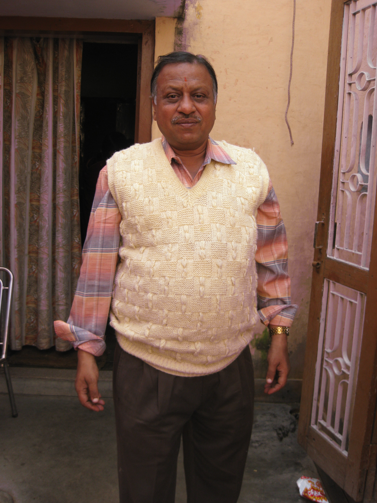

Girish Foundation dedicated to people with less or no means
Sh.Girish Kumar Garg(1952-2010)was a great philantrophic and great personality he always used to take care of the well being of the people surrounding him. His crave to humanity has inspired the formation of Girish Foundation which aims to contribute consistently and relentlessli towards the well being of people with no means / or less means.